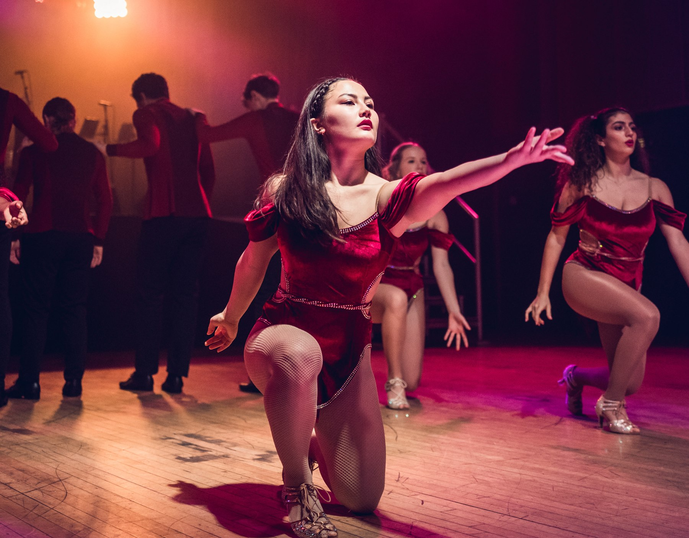

Welcome to my little corner of the internet!
Bristol-based
videographer &
photographer
A selection of some of my favourite work
that I have shot, edited and cherished over the years.

The portfolio
Selected work.
Weddings, football matches, and all in-between. Emotion tells the story in these projects, I'm just lucky enough to be there listening.
Small screen, big ideas
Made for the Feed.
A moving picture show of short-form edits, experiments and social-first storytelling.
Behind the camera
A creative eye.
A hands-on approach.
Hi there! My name is Miranda and I'm a freelance videographer and photographer based in and around Bristol! I am a geek at heart and aside from being behind the camera and tinkering in Adobe you'll find me at cosplay conventions, in the gym getting big (debatable) muscles, at the keyboard producing music, and at your next shoot, perhaps!
Get in touch
Have a story
in mind?
For project enquiries, collaborations
or a conversation about my work.